A hands-on walkthrough — from a user getting access denied, to configuring Ranger policies and watching the same query succeed. No theory, just real steps.
We have an IBM watsonx.data instance. A normal user — diuser — needs to query a table in the Iceberg catalog. Right now, they get access denied. We'll integrate Apache Ranger, define a policy, and prove that the same query succeeds — all without changing anything in watsonx.data's own access control.
From watsonx.data v2.1+, you can only use one external policy engine — either Apache Ranger or IBM Knowledge Catalog. Choose before you begin. Also: Presto JDBC connection to Ranger may not work — you must add resources manually in Ranger (exact names required).
Every query in watsonx.data passes through the Common Policy Gateway (CPG) before touching data. When Ranger integration is active, CPG delegates the allow/deny decision to Apache Ranger via the Ranger Plugin.
Before testing access control, we need to configure a user diuser who will run queries and experience the access denied → access granted journey. This user needs specific roles and permissions across the platform.
User creation and access management differs between watsonx.data SaaS and On-Premises deployments. This guide shows the On-Premises approach with screenshots from an on-prem installation. For SaaS, user management is typically handled through IBM Cloud IAM.
Access the watsonx.data console with your administrator credentials.
Navigate to Access control → Users tab. Click Add User and create the user with username diuser.
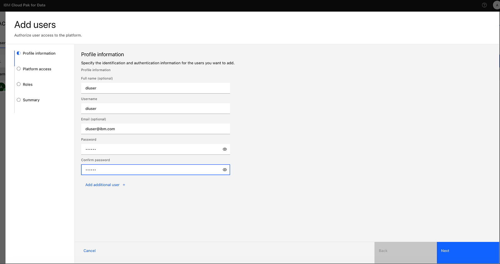
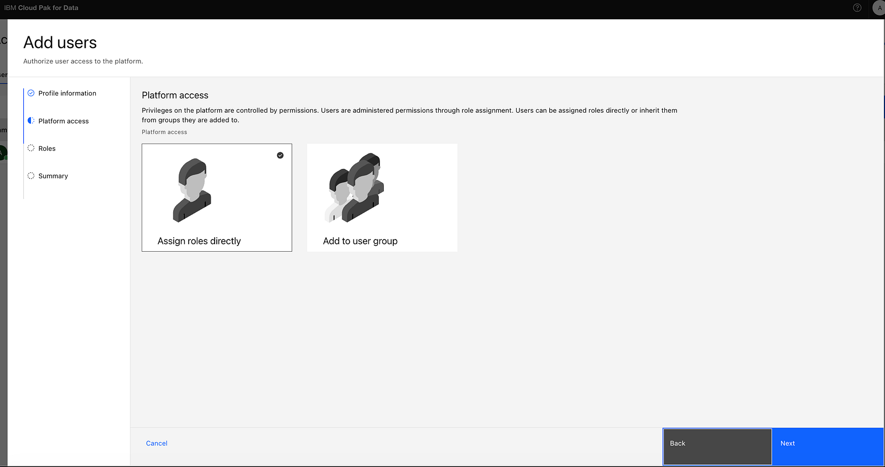
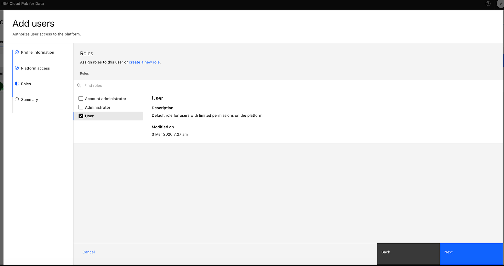
In the user configuration or Access control section, assign diuser as a Metastore Admin to the watsonx.data instance. This grants basic platform access to run queries.
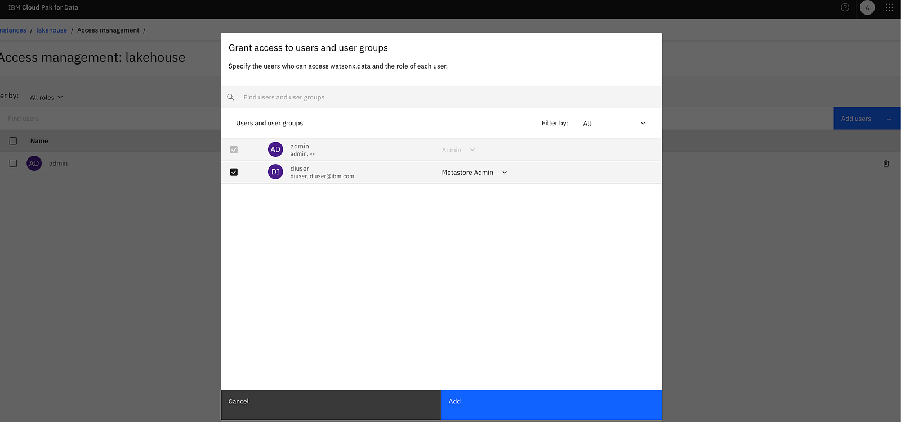
Go to Infrastructure manager section in the console.
Select the Presto engine. Click Access control or similar option. Add diuser with Admin role to enable query execution.
Select the Apache Spark engine. Add diuser with Admin role.
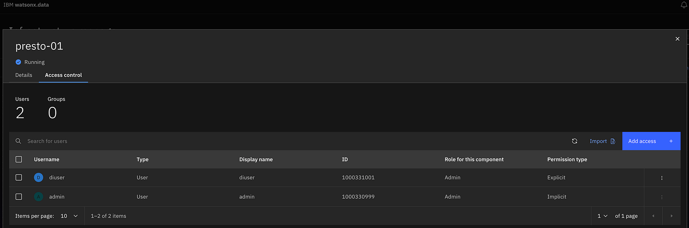
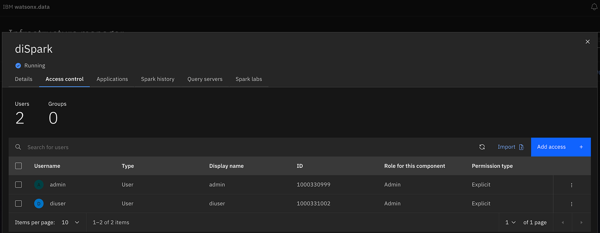
Go to Infrastructure manager section.
Select the iceberg_data catalog. Click Access control and add diuser with User role to grant catalog access.
To demonstrate the security enforcement, we'll run the same query with two different users. First, we'll verify that Admin can access the data successfully. Then we'll show that diuser gets access denied without a Ranger policy.
First, let's confirm that the admin user can successfully query the table. This establishes our baseline and proves the table exists and is accessible.
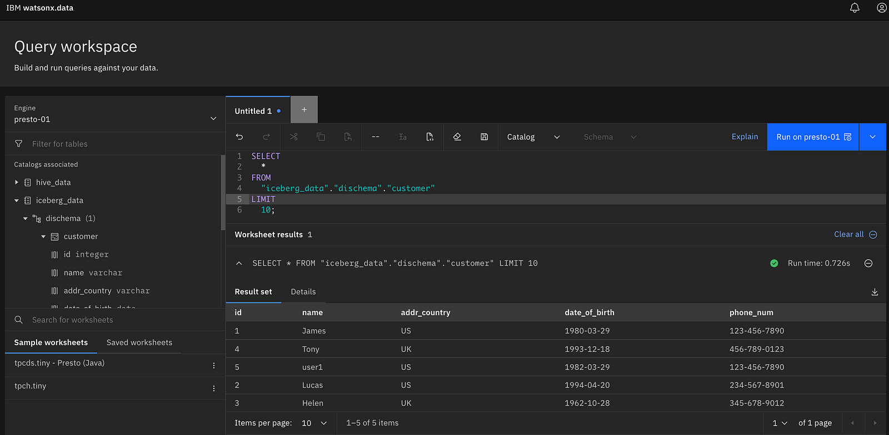
Now log in as diuser and run the exact same query. With no Ranger policy defined yet, the query should fail. This confirms that the security layer is working.
Use the credentials for diuser to access the watsonx.data console.
From the navigation menu, click Query workspace. Select the Presto engine.
Run the identical query against the Iceberg catalog:
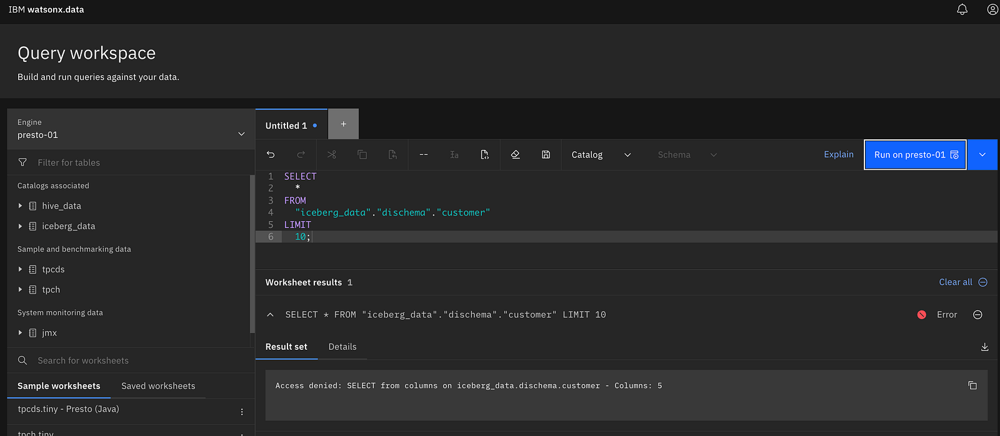
This error is expected and good. It confirms that the Ranger Plugin inside CPG is intercepting the query. If you see data returned here, the integration is not active — re-check your configuration.
Now switch to the Apache Ranger console. We need to: (1) add diuser manually with the exact same username, (2) create a PRESTO service, and (3) define an access policy for iceberg_data.dischema.customer.
The username diuser you create in watsonx.data must exactly match the username you add in Apache Ranger. Case-sensitive. This is how CPG maps the query identity to the Ranger policy.
The Presto JDBC connection test in Ranger often fails in this integration. Do not rely on it. Instead, add resources manually using the exact catalog, schema, and table names. The policy will still be enforced correctly.
Access the Ranger console with your administrator credentials.
Navigate to Settings in the top menu, then click Users/Groups/Roles.
Click Add New User. Enter the username diuser exactly as it appears in watsonx.data. Set a password and save. Case-sensitive — must match exactly.
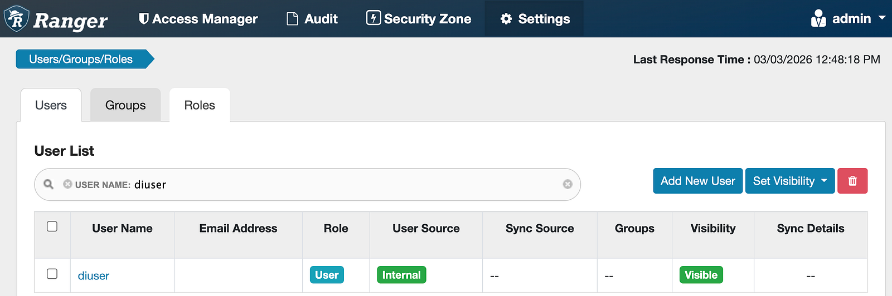
From the Ranger home page, click the Resource tab. Locate the PRESTO section in the service list.
Click the + icon next to PRESTO. Give the service a name (e.g., watsonx-presto). Fill in the connection details — even if the JDBC test fails, save the service.
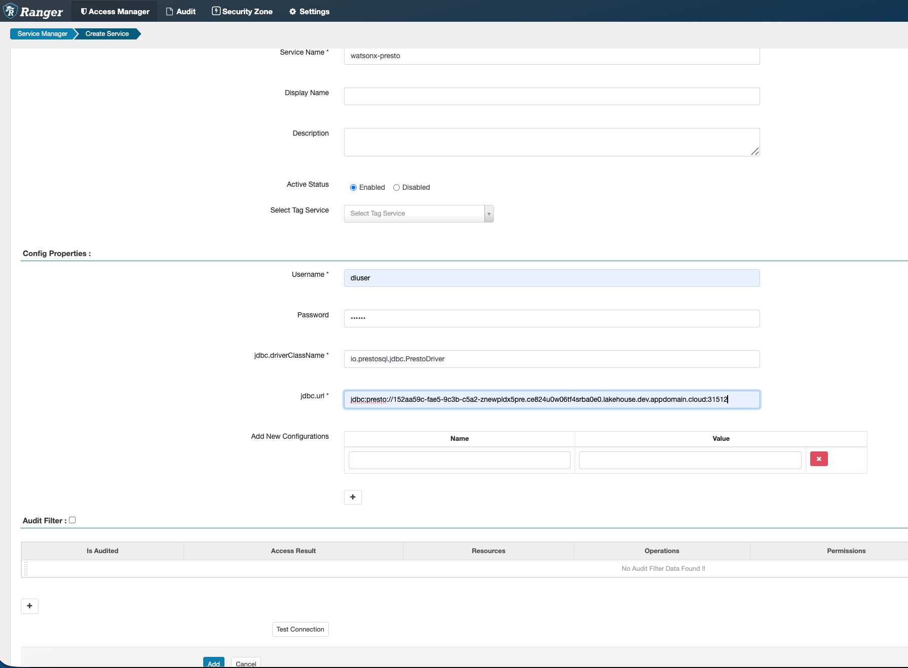
Click Add to save. The service appears in the PRESTO section of Service Manager.
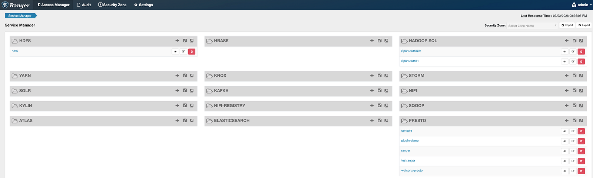
When you create a PRESTO service in Ranger, two default policies are automatically created for general access:
all - catalog, schema — Provides basic catalog and schema level accessall - catalog, schema, table — Provides table level accessKeep these default policies as they provide necessary baseline access. You will add a new policy for specific resource access control for diuser.
Now create a policy that grants diuser SELECT access on iceberg_data.dischema.customer. Since the JDBC connection may not work, add the resource path manually.
Click watsonx-presto in the Service Manager. This opens the policy list for this service.
Click the Add New Policy button at the top right of the policy list.
In the resource fields, type the exact names or * (means applied to all): Catalog = iceberg_data, Schema = dischema, Table = customer. Do not use the auto-complete — type manually.
In the Allow Conditions section, add diuser username. Check the Select permission checkbox.
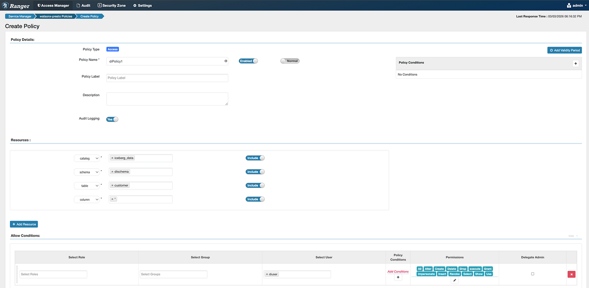
Scroll to the bottom and click Save. The policy is now active in Ranger.
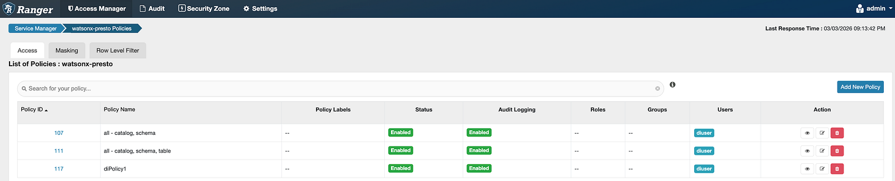
The catalog name (iceberg_data), schema (dischema), and table (customer) must match exactly what is registered in watsonx.data. A single character difference means the policy will not match and access will be denied.
Now switch back to watsonx.data as Admin. Enable the External Policy toggle and add the Apache Ranger integration. This installs the Ranger Plugin into the CPG layer.
Re-log in with your administrator credentials.
From the left navigation, select Access control, then click the Integrations tab.
Toggle on Enable data policy within watsonx.data (External Policy). This activates the policy enforcement pipeline through CPG.
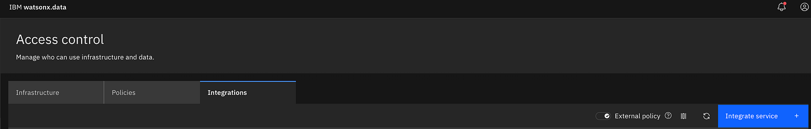
Click the Integrate service button. The integration configuration window opens.
Complete all fields as shown in the table below. Upload the SSL certificate if your Ranger uses HTTPS.
Click List resources to load available Ranger resources. Select the PRESTO resource (the watsonx-presto service you created).
Click Integrate. The Ranger Plugin is now installed in CPG. Apache Ranger appears as active in the integrations list.
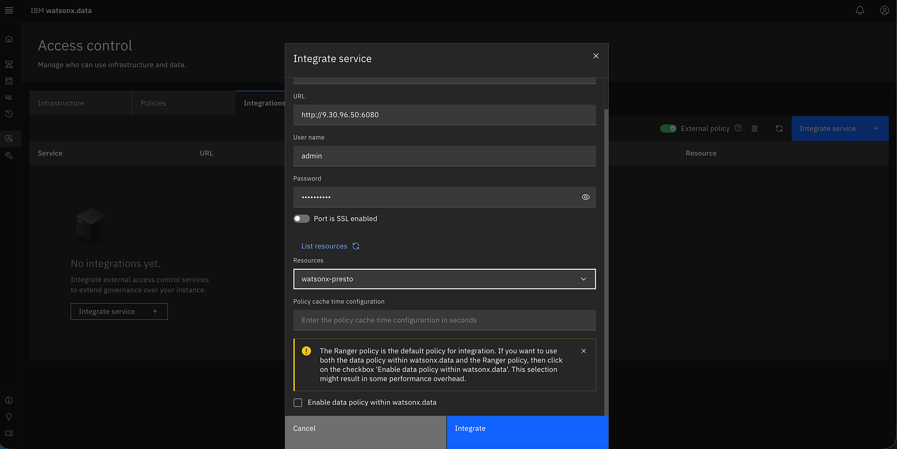
| Field | Value / Description |
|---|---|
| Service | Select Apache Ranger |
| URL | Ranger URL, e.g. https://ranger.example.com:6182 |
| Username | Ranger admin username |
| Password | Ranger admin password |
| Port is SSL enabled | Check if Ranger uses HTTPS |
| Upload SSL Certificate | Upload .pem / .crt / .cert / .cer file |
| List resources | Click to load Ranger services — select watsonx-presto |
| Policy Cache Time | Seconds between policy refreshes (e.g., 30) |
| Enable data policy | ✅ Check to enable AMS Policy alongside Ranger |
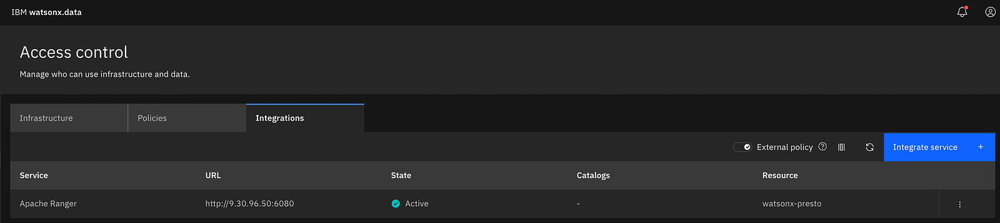
Apache Ranger now appears in the Access Control integrations list with status Active. All Presto queries from this point forward will be authorized through CPG → Ranger Plugin → Apache Ranger.
Now log back in as diuser and run the exact same query. This time, Ranger has a policy granting SELECT on iceberg_data.dischema.customer — and the query should return results.
Switch back to diuser's credentials in the watsonx.data console.
Navigate to Query workspace and select the Presto engine.
Execute the identical query — no changes needed:
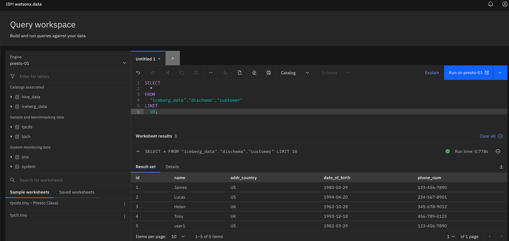
The query now returns data. Apache Ranger evaluated the policy, matched diuser's identity to the iceberg_data.dischema.customer SELECT permission, and returned ALLOW through the CPG → Ranger Plugin pipeline. Zero changes were made to watsonx.data's own access control.
diuser runs SELECT * FROM iceberg_data.dischema.customer → Access Denied. No Ranger policy exists. CPG blocks the query.
Added diuser in Ranger (exact username). Created PRESTO service. Defined SELECT policy on iceberg_data.dischema.customer. Enabled External Policy + Ranger integration in watsonx.data.
Same query → Access Granted. Ranger evaluates the policy, CPG receives ALLOW, Presto returns the data. Fine-grained control, zero watsonx.data code changes.
Beyond basic access control, Apache Ranger supports advanced policy types for fine-grained data protection:
Control which rows users can see based on filter conditions. Perfect for multi-tenant scenarios or regional data access. Learn more →
Mask sensitive data in specific columns while maintaining query access. Protect PII, credit cards, emails, and other sensitive information. Learn more →